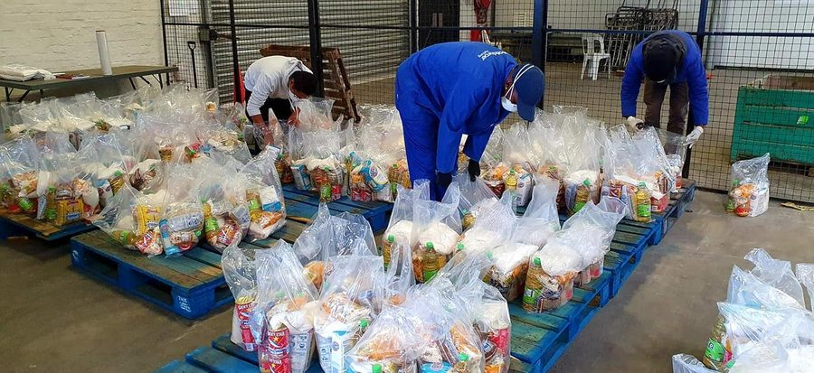
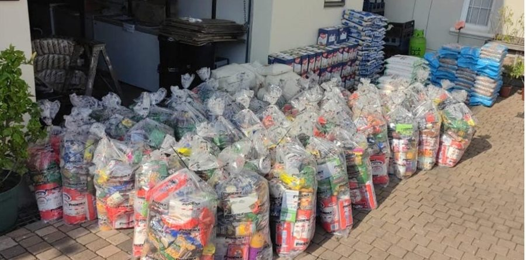
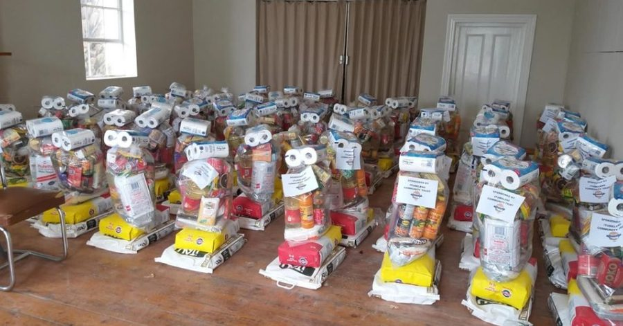
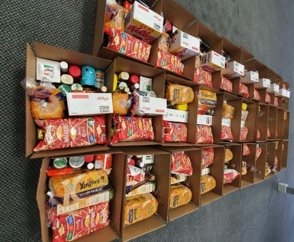
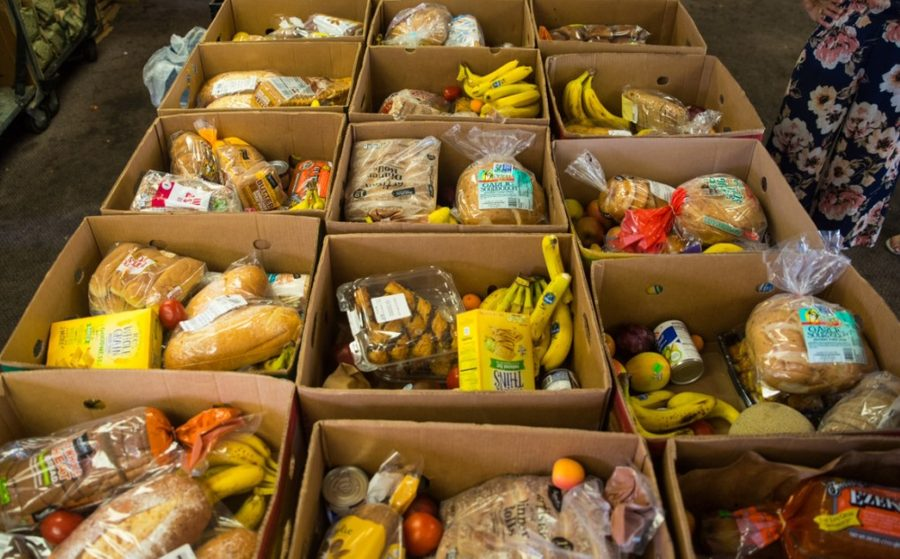
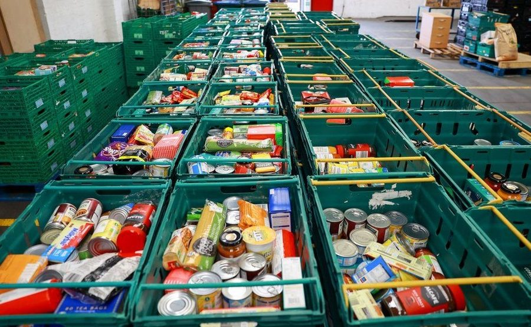
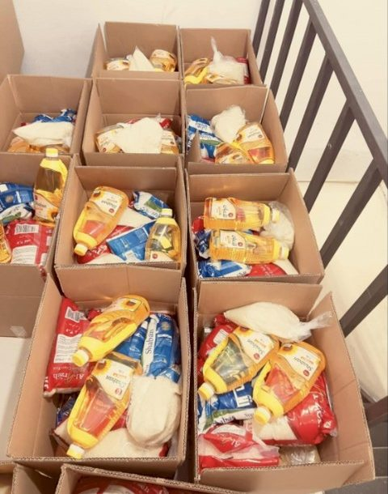
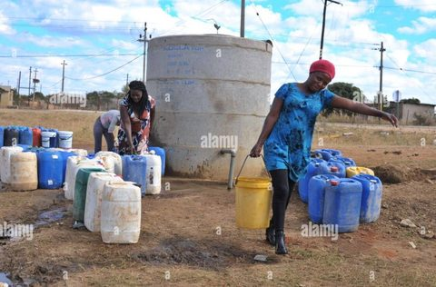
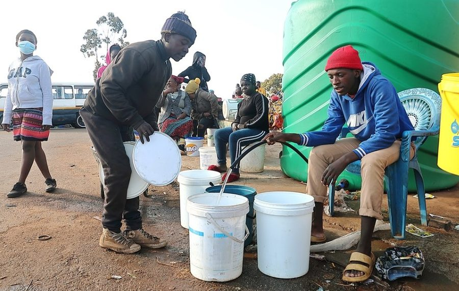

Gallery
By addressing hunger and water scarcity together, we tackle two of the most pressing challenges facing disadvantaged families. We work hand‑in‑hand with local communities, volunteers, and partners to build resilience and self‑reliance. At the heart of our vision is a commitment to dignity‑led support that empowers families to thrive. If you would like to be part of what we do, please reach out to us through our Contact page or send an enquiry. Your support can make a real difference in the lives of those who need it most.
Select any photo to view it larger. Use the arrow keys or swipe to move between photos.

















